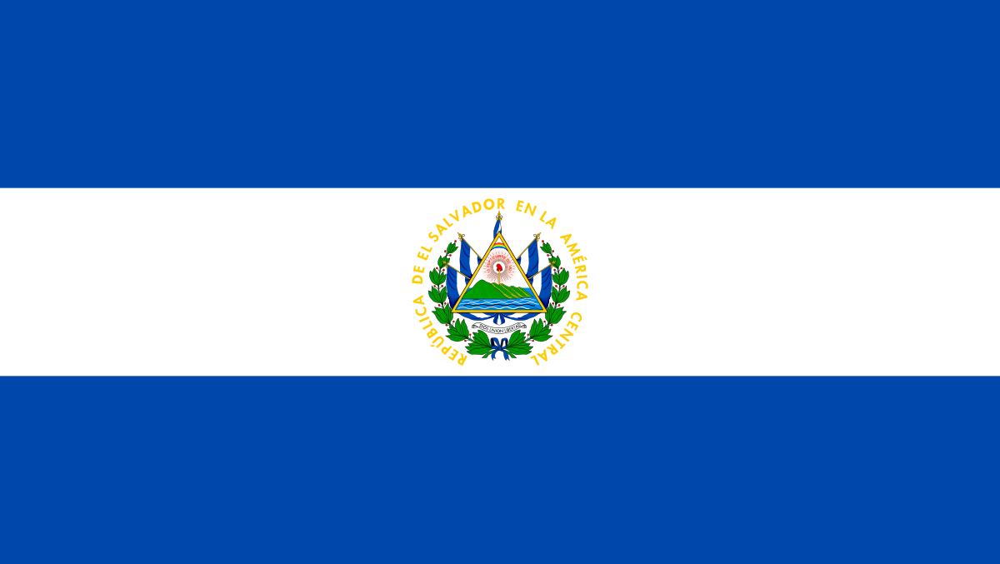

Información
Historia
La civilización de El Salvador data de la época precolombina, alrededor de 1500 años A.C., según lo evidencia las ruinas de Tazumal y Chalchuapa. Los primeros habitantes fueron los Pocomames, Lencas, y Pipiles, que se asentaron en las zonas centrales y occidentales del país a mediados del Siglo XI.
Simbolos Patrios
Ave Nacional
Árbol Nacional

Flor Nacional

Bandera Nacional
Extensión Territorial
21,041 km²
Departamentos
- Santa Ana
- Sonsonate
- Ahuachapan
- Chalatenángo
- La Libetad
- La Páz
- Cabañas
- Cuscarlán
- San Salvador
- Usulután
- San Miguel
- San Vicente
- La Unión
- Morazán
Lugares Turisticos
Parque Nacional El Boquerón